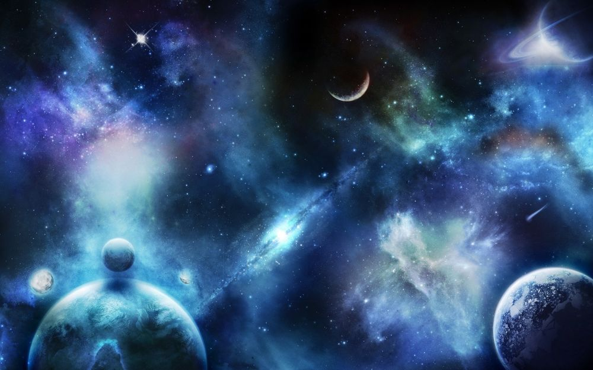

Люди всегда много думали о том, что ждёт нас там, среди звёзд: много фильмов и книг посвящено освоению космоса, но ещё больше таких, которые спрашивают – одни ли мы во вселенной? На самом деле это один из самых важных вопросов на свете – есть ли в космосе кто-то ещё, похожий на нас, людей, или же мы – это единственная раса разумных существ во всей вселенной. Даже учёные, умнейшие люди нашей планеты, не могут прийти к одному простому ответу – существует множество разных мнений. Вселенная очень велика, точный её размер не известен никому, а из-за наших не очень сильно развитых технологий мы можем использовать только доступные нам методы её изучения. Один из них – радиосигналы. Если мы получим такой сигнал и расшифруем его, это точно будет означать, что мы не одни во вселенной.
